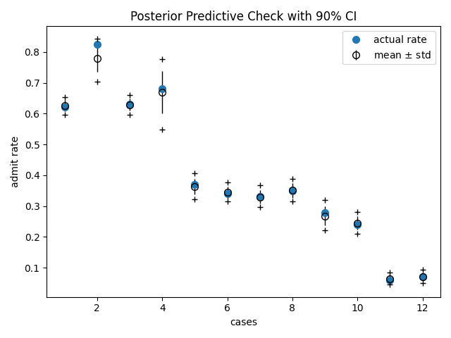

Note
Click here to download the full example code
Generalized Linear Mixed Models¶
The UCBadmit data is sourced from the study [1] of gender biased in graduate admissions at UC Berkeley in Fall 1973:
dept |
male |
applications |
admit |
|---|---|---|---|
0 |
1 |
825 |
512 |
0 |
0 |
108 |
89 |
1 |
1 |
560 |
353 |
1 |
0 |
25 |
17 |
2 |
1 |
325 |
120 |
2 |
0 |
593 |
202 |
3 |
1 |
417 |
138 |
3 |
0 |
375 |
131 |
4 |
1 |
191 |
53 |
4 |
0 |
393 |
94 |
5 |
1 |
373 |
22 |
5 |
0 |
341 |
24 |
This example replicates the multilevel model m_glmm5 at [3], which is used to evaluate whether the data contain evidence of gender biased in admissions accross departments. This is a form of Generalized Linear Mixed Models for binomial regression problem, which models
varying intercepts accross departments,
varying slopes (or the effects of being male) accross departments,
correlation between intercepts and slopes,
and uses non-centered parameterization (or whitening).
A more comprehensive explanation for binomial regression and non-centered parameterization can be found in Chapter 10 (Counting and Classification) and Chapter 13 (Adventures in Covariance) of [2].
References:

Bickel, P. J., Hammel, E. A., and O’Connell, J. W. (1975), “Sex Bias in Graduate Admissions: Data from Berkeley”, Science, 187(4175), 398-404.
McElreath, R. (2018), “Statistical Rethinking: A Bayesian Course with Examples in R and Stan”, Chapman and Hall/CRC.
https://github.com/rmcelreath/rethinking/tree/Experimental#multilevel-model-formulas
Out:
Downloading - https://d2hg8soec8ck9v.cloudfront.net/datasets/UCBadmit.csv.
Download complete.
==============================glmm - TRAIN==============================
Dept Male ActualProb Pred(p25) Pred(p50) Pred(p75)
0 1 0.62 0.61 0.63 0.64
0 0 0.82 0.75 0.78 0.81
1 1 0.63 0.61 0.63 0.64
1 0 0.68 0.63 0.67 0.72
2 1 0.37 0.34 0.36 0.38
2 0 0.34 0.33 0.34 0.36
3 1 0.33 0.32 0.33 0.35
3 0 0.35 0.33 0.35 0.37
4 1 0.28 0.25 0.27 0.29
4 0 0.24 0.23 0.25 0.26
5 1 0.06 0.05 0.06 0.07
5 0 0.07 0.06 0.07 0.08
import argparse
import os
import matplotlib.pyplot as plt
import numpy as onp
from jax import random
import jax.numpy as np
from jax.scipy.special import expit
import numpyro
import numpyro.distributions as dist
from numpyro.examples.datasets import UCBADMIT, load_dataset
from numpyro.infer import MCMC, NUTS, Predictive
def glmm(dept, male, applications, admit=None):
v_mu = numpyro.sample('v_mu', dist.Normal(0, np.array([4., 1.])))
sigma = numpyro.sample('sigma', dist.HalfNormal(np.ones(2)))
L_Rho = numpyro.sample('L_Rho', dist.LKJCholesky(2, concentration=2))
scale_tril = sigma[..., np.newaxis] * L_Rho
# non-centered parameterization
num_dept = len(onp.unique(dept))
z = numpyro.sample('z', dist.Normal(np.zeros((num_dept, 2)), 1))
v = np.dot(scale_tril, z.T).T
logits = v_mu[0] + v[dept, 0] + (v_mu[1] + v[dept, 1]) * male
if admit is None:
# we use a Delta site to record probs for predictive distribution
probs = expit(logits)
numpyro.sample('probs', dist.Delta(probs), obs=probs)
numpyro.sample('admit', dist.Binomial(applications, logits=logits), obs=admit)
def run_inference(dept, male, applications, admit, rng_key, args):
kernel = NUTS(glmm)
mcmc = MCMC(kernel, args.num_warmup, args.num_samples, args.num_chains,
progress_bar=False if "NUMPYRO_SPHINXBUILD" in os.environ else True)
mcmc.run(rng_key, dept, male, applications, admit)
return mcmc.get_samples()
def print_results(header, preds, dept, male, probs):
columns = ['Dept', 'Male', 'ActualProb', 'Pred(p25)', 'Pred(p50)', 'Pred(p75)']
header_format = '{:>10} {:>10} {:>10} {:>10} {:>10} {:>10}'
row_format = '{:>10.0f} {:>10.0f} {:>10.2f} {:>10.2f} {:>10.2f} {:>10.2f}'
quantiles = onp.quantile(preds, [0.25, 0.5, 0.75], axis=0)
print('\n', header, '\n')
print(header_format.format(*columns))
for i in range(len(dept)):
print(row_format.format(dept[i], male[i], probs[i], *quantiles[:, i]), '\n')
def main(args):
_, fetch_train = load_dataset(UCBADMIT, split='train', shuffle=False)
dept, male, applications, admit = fetch_train()
rng_key, rng_key_predict = random.split(random.PRNGKey(1))
zs = run_inference(dept, male, applications, admit, rng_key, args)
pred_probs = Predictive(glmm, zs)(rng_key_predict, dept, male, applications)['probs']
header = '=' * 30 + 'glmm - TRAIN' + '=' * 30
print_results(header, pred_probs, dept, male, admit / applications)
# make plots
fig, ax = plt.subplots(1, 1)
ax.plot(range(1, 13), admit / applications, "o", ms=7, label="actual rate")
ax.errorbar(range(1, 13), np.mean(pred_probs, 0), np.std(pred_probs, 0),
fmt="o", c="k", mfc="none", ms=7, elinewidth=1, label=r"mean $\pm$ std")
ax.plot(range(1, 13), np.percentile(pred_probs, 5, 0), "k+")
ax.plot(range(1, 13), np.percentile(pred_probs, 95, 0), "k+")
ax.set(xlabel="cases", ylabel="admit rate", title="Posterior Predictive Check with 90% CI")
ax.legend()
plt.savefig("ucbadmit_plot.pdf")
plt.tight_layout()
if __name__ == '__main__':
assert numpyro.__version__.startswith('0.2.4')
parser = argparse.ArgumentParser(description='UCBadmit gender discrimination using HMC')
parser.add_argument('-n', '--num-samples', nargs='?', default=2000, type=int)
parser.add_argument('--num-warmup', nargs='?', default=500, type=int)
parser.add_argument('--num-chains', nargs='?', default=1, type=int)
parser.add_argument('--device', default='cpu', type=str, help='use "cpu" or "gpu".')
args = parser.parse_args()
numpyro.set_platform(args.device)
numpyro.set_host_device_count(args.num_chains)
main(args)
Total running time of the script: ( 0 minutes 27.789 seconds)